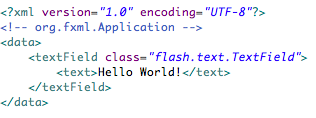

In this example you will learn the basics around how FXML works.
Instantiating a class
Compare the two code samples below. Here you will see the differences in how to instantiate a class from AS3 to FXML.
Note that the keyword
class is used to replace the new operator.
It is also important to note that the full class name must be supplied in order to instantiate the class properly.
AS3:
FXML:
Setting a property
Compare the two code samples below. Note that in FXML child nodes become part of the scope of their respective parent node.
In this case anything between nodes
<textField></textField> will be assigned to the textField object.
For this example we have kept it simple to illustrate how to assign a property to an object.
It is possible to assign more complex values including numbers, booleans, arrays and even complex object types!
This will be demonstrated in later examples.
AS3:
FXML:
Calling a method
Compare the two code samples below. You can see that calling a method is quite simple.
The main thing to keep in mind is that parameters for a method need to be wrapped with an XML node.
While the name of the node is not restricted it is recommended that you use the name of the parameter declared in the function.
In this case we have chosen to use "
newText" as our parameter name since it matches that from the documentation of the method appendText.
While this example only shows a single parameter, you can pass multiple parameters by supplying more nodes.
The nodes must be sent in the same order the function expects them.
AS3:
FXML:
Constructor Parameters
Compare the two code samples below.
The
flash.utils.Timer class takes in two parameters into the constructor.
To achieve this in FXML a special XML node labeled constructor will force the parameters to be passed into the constructor,
just as if it were a method call.